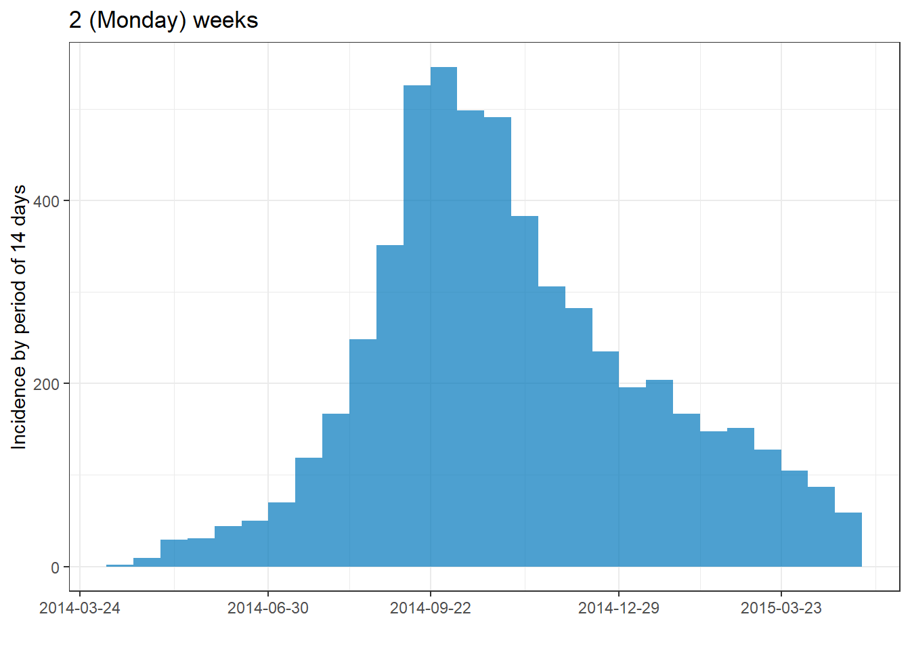
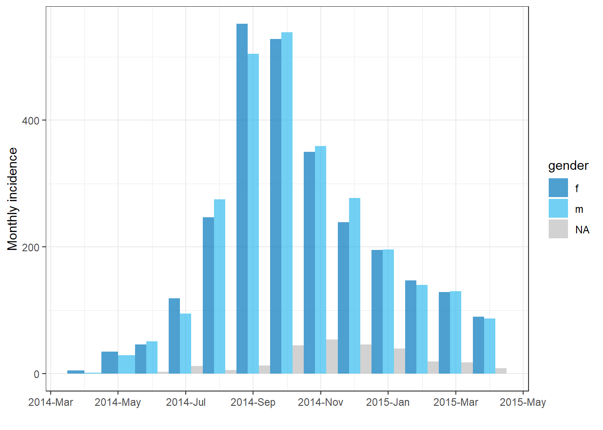

32 Curvas epidémicas

ADVERTENCIA: Esta traducción es sólo un borrador de la traducción al español. Este documento tal cual está ha sido generado automáticamente con DeepL.com y se han hecho algunas correcciones globales. Está pendiente de una revisión completa.
Una curva epidémica (también conocida como “curva epi”) es un gráfico epidemiológico básico que se suele utilizar para visualizar el patrón temporal de aparición de la enfermedad entre un grupo o epidemia de casos.
El análisis de la epicurva puede revelar tendencias temporales, valores atípicos, la magnitud del brote, el periodo de exposición más probable, los intervalos de tiempo entre las generaciones de casos, e incluso puede ayudar a identificar el modo de transmisión de una enfermedad no identificada (por ejemplo, fuente puntual, fuente común continua, propagación de persona a persona). En el sitio web de los CDC de EE.UU. se puede encontrar una lección en línea sobre la interpretación de las epicurvas.
En esta página mostramos dos enfoques para producir epicurvas en R:
- El paquete incidence2, que puede producir una curva epi con simples comandos
- El paquete ggplot2, que permite una personalización avanzada mediante comandos más complejos
También se abordan casos de uso específicos como:
- Trazado de datos de recuento agregados
- Facetado o producción de múltiplos gráficos pequeños
- Aplicación de medias móviles
- Mostrar qué datos son “provisionales” o están sujetos a retrasos en la presentación de informes
- Superposición de la incidencia de casos acumulados mediante un segundo eje
32.1 Preparación
Paquetes
Este trozo de código muestra la carga de los paquetes necesarios para los análisis. En este manual destacamos p_load() de pacman, que instala el paquete si es necesario y lo carga para su uso. También puede cargar los paquetes instalados con library() de R base. Consulta la página sobre fundamentos de R para obtener más información sobre los paquetes de R.
pacman::p_load(
rio, # file import/export
here, # relative filepaths
lubridate, # working with dates/epiweeks
aweek, # alternative package for working with dates/epiweeks
incidence2, # epicurves of linelist data
i2extras, # supplement to incidence2
stringr, # search and manipulate character strings
forcats, # working with factors
RColorBrewer, # Color palettes from colorbrewer2.org
tidyverse # data management + ggplot2 graphics
) Importar datos
En esta sección se utilizan dos conjuntos de datos de ejemplo:
-
Linelistcon casos individuales de una epidemia simulada - Recuentos agregados por hospital de la misma epidemia simulada
Los datos se importan mediante la función import() del paquete rio. Consulta la página sobre importación y exportación para conocer las distintas formas de importar datos.
Linelist con casos
Importamos los datos de casos de una epidemia de ébola simulada. Si deseas descargar los datos para seguirlos paso a paso, consulta las instrucciones en la página de descarga de manuales y datos. Asumimos que el archivo está en el directorio de trabajo, por lo que no se especifican subcarpetas en esta ruta de archivo.
linelist <- import("linelist_cleaned.rds")A continuación se muestran las primeras 50 filas.
Recuentos de casos agregados por hospital
A efectos del manual, los datos de recuentos semanales agregados por hospital se crean a partir de linelist con el siguiente código.
# import the counts data into R
count_data <- linelist %>%
group_by(hospital, date_hospitalisation) %>%
summarize(n_cases = dplyr::n()) %>%
filter(date_hospitalisation > as.Date("2013-06-01")) %>%
ungroup()A continuación se muestran las primeras 50 filas:
Establecer parámetros
Para la producción de un informe, es posible que desees establecer parámetros editables como la fecha para la que los datos son actuales (la “data_date”). A continuación, puedes hacer referencia al objeto data_date en tu código cuando apliques filtros o en subtítulos dinámicos.
## set the report date for the report
## note: can be set to Sys.Date() for the current date
data_date <- as.Date("2015-05-15")Verificar las fechas
Verifica que cada columna de fecha relevante es de tipo Date y tiene un rango de valores apropiado. Puedes hacerlo simplemente utilizando hist() para histogramas, o range() con na.rm=TRUE, o con ggplot() como se indica a continuación.
# check range of onset dates
ggplot(data = linelist)+
geom_histogram(aes(x = date_onset))32.2 Epicurves con el paquete de incidencia2
A continuación mostramos cómo hacer epicurvas utilizando el paquete incidence2. Los autores de este paquete han intentado que el usuario pueda crear y modificar epicurvas sin necesidad de conocer la sintaxis de ggplot2. Gran parte de esta página está adaptada de las viñetas del paquete, que se pueden encontrar en la página de github de incidence2.
Ejemplo sencillo
Se requieren 2 pasos para trazar una curva epidémica con el paquete incidence2:
-
Crear un objeto de incidencia (utilizando la función
incidence())- Proporcionar los datos
- Especificar la columna de fecha a
date_index = - Especificar el
interval =en el que deben agregarse los casos (diario, semanal, mensual..) - Especificar cualquier columna de agrupación (por ejemplo, sexo, hospital, resultado)
-
Trazar el objeto de incidencia
- Especificar etiquetas, colores, títulos, etc.
A continuación, cargamos el paquete incidence2, creamos el objeto de incidencia a partir de linelist en la columna date_onset y agregamos los casos por día. A continuación, imprimimos un resumen del objeto de incidencia.
# load incidence2 package
pacman::p_load(incidence2)
# create the incidence object, aggregating cases by day
epi_day <- incidence( # create incidence object
x = linelist, # dataset
date_index = date_onset, # date column
interval = "day" # date grouping interval
)El objeto incidencia2 tiene el aspecto de un tibble (como una trama de datos) y puede imprimirse o manipularse como un dataframe.
class(epi_day)## [1] "incidence2" "incidence_df" "tbl_df" "tbl" "data.frame"Este es el aspecto que tiene cuando se imprime. Tiene una columna date_index y una columna count.
epi_day## An incidence object: 367 x 2
## date range: [2014-04-07] to [2015-04-30]
## cases: 5632
## interval: 1 day
## cumulative: FALSE
##
## date_index count
## <date> <int>
## 1 2014-04-07 1
## 2 2014-04-15 1
## 3 2014-04-21 2
## 4 2014-04-25 1
## 5 2014-04-26 1
## 6 2014-04-27 1
## 7 2014-05-01 2
## 8 2014-05-03 1
## 9 2014-05-04 1
## 10 2014-05-05 1
## # ... with 357 more rowsTambién puedes imprimir un resumen del objeto:
# print summary of the incidence object
summary(epi_day)## date range: [2014-04-07] to [2015-04-30]
## cases: 5632
## interval: 1 day
## cumulative: FALSE
## timespan: 389 daysPara trazar el objeto de incidencia, utiliza plot() en el nombre del objeto de incidencia. En segundo plano, se llama a la función plot.incidence2(), por lo que para leer la documentación específica de incidence2** se ejecutaría ?plot.incidence2.
# plot the incidence object
plot(epi_day)Si notas muchas líneas blancas verticales diminutas, intenta ajustar el tamaño de la imagen. Por ejemplo, si exportas el gráfico con ggsave(), puede proporcionar números a width = y height =. Si amplías el gráfico esas líneas pueden desaparecer.
Cambiar el intervalo de tiempo de la agregación de casos
El argumento interval = de incidence() define cómo se agrupan las observaciones en barras verticales.
Especificar el intervalo
incidence2 proporciona flexibilidad y una sintaxis comprensible para especificar cómo quieres agregar tus casos en barras epicúreas. Proporcione un valor como los siguientes al argumento interval =. Puedes escribir cualquiera de los siguientes en plural (por ejemplo, “weeks”), y puedes añadir números antes (por ejemplo, “3 monts”).
| Opción de argumento | Más explicaciones |
|---|---|
| Número (1, 7, 13, 14, etc.) | Número de días por intervalo |
| “week” | nota: el lunes es el día de inicio predeterminad |
| “2 weeks” | o 3, 4, 5… |
| “Sunday week” | semanas que comienzan en domingo (también se puede utilizar el Thursday, etc.) |
| “2 Sunday weeks” | o 3, 4, 5… |
| “MMWRweek” | la semana comienza en domingo - ver US CDC |
| “month” | El 1 de mes |
| “quarter” | 1er mes del trimestre |
| “2 months” | o 3, 4, 5… |
| “year” | Primer día del año natural |
A continuación se muestran ejemplos de cómo se ven los diferentes intervalos cuando se aplican a linelist. Observe cómo el formato por defecto y la frecuencia de las etiquetas de fecha en el eje-x cambian a medida que cambia el intervalo de fecha.
# Create the incidence objects (with different intervals)
##############################
# Weekly (Monday week by default)
epi_wk <- incidence(linelist, date_onset, interval = "Monday week")
# Sunday week
epi_Sun_wk <- incidence(linelist, date_onset, interval = "Sunday week")
# Three weeks (Monday weeks by default)
epi_2wk <- incidence(linelist, date_onset, interval = "2 weeks")
# Monthly
epi_month <- incidence(linelist, date_onset, interval = "month")
# Quarterly
epi_quarter <- incidence(linelist, date_onset, interval = "quarter")
# Years
epi_year <- incidence(linelist, date_onset, interval = "year")
# Plot the incidence objects (+ titles for clarity)
############################
plot(epi_wk)+ labs(title = "Monday weeks")
plot(epi_Sun_wk)+ labs(title = "Sunday weeks")
plot(epi_2wk)+ labs(title = "2 (Monday) weeks")
plot(epi_month)+ labs(title = "Months")
plot(epi_quarter)+ labs(title = "Quarters")
plot(epi_year)+ labs(title = "Years")
Primera fecha
Puedes especificar opcionalmente un valor de tipo Date (por ejemplo, as.Date("2016-05-01")) a firstdate = en el comando incidence(). Si se da, los datos se recortarán a este rango y los intervalos comenzarán en esta fecha.
Grupos
Los grupos se especifican en el comando incidence(), y pueden utilizarse para colorear las barras o para facetar los datos. Para especificar los grupos en tus datos, escribe el nombre de la(s) columna(s) en el argumento groups = del comando incidence() (sin comillas alrededor del nombre de la columna). Si especificas varias columnas, pon sus nombres dentro de c().
Puedes especificar que los casos con valores faltantes en las columnas de agrupación sean listados como un grupo NA distinto estableciendo na_as_group = TRUE. De lo contrario, se excluirán del gráfico.
Para colorear las barras por una columna de agrupación, debes proporcionar de nuevo el nombre de la columna en
fill =del comandoplot().Para crear una faceta basada en una columna de agrupación, consulta la sección siguiente sobre facetas con incidence2.
En el ejemplo siguiente, los casos de todo el brote se agrupan por su categoría de edad. Los valores faltantes se incluyen como grupo. El intervalo de la epicurva es de semanas.
# Create incidence object, with data grouped by age category
age_outbreak <- incidence(
linelist, # dataset
date_index = date_onset, # date column
interval = "week", # Monday weekly aggregation of cases
groups = age_cat, # age_cat is set as a group
na_as_group = TRUE) # missing values assigned their own group
# plot the grouped incidence object
plot(
age_outbreak, # incidence object with age_cat as group
fill = age_cat)+ # age_cat is used for bar fill color (must have been set as a groups column above)
labs(fill = "Age Category") # change legend title from default "age_cat" (this is a ggplot2 modification) CONSEJO: Cambia el título de la leyenda añadiendo
CONSEJO: Cambia el título de la leyenda añadiendo + el comando de ggplot2 labs(fill = "su título")
También puedes hacer que las barras agrupadas se muestren una al lado de la otra estableciendo stack = FALSE en plot(), como se muestra a continuación:
# Make incidence object of monthly counts.
monthly_gender <- incidence(
linelist,
date_index = date_onset,
interval = "month",
groups = gender # set gender as grouping column
)
plot(
monthly_gender, # incidence object
fill = gender, # display bars colored by gender
stack = FALSE) # side-by-side (not stacked)Puedes establecer el argumento na_as_group = a FALSE en el comando incidence() para eliminar las filas con valores faltantes del gráfico.
Datos filtrados
Para trazar la epicurva de un subconjunto de datos:
- Filtrar los datos del listado
- Proporcionar los datos filtrados al comando
incidence() - Trazar el objeto de incidencia
El ejemplo siguiente utiliza datos filtrados para mostrar sólo los casos del Central Hospital.
# filter the linelist
central_data <- linelist %>%
filter(hospital == "Central Hospital")
# create incidence object using filtered data
central_outbreak <- incidence(central_data, date_index = date_onset, interval = "week")
# plot the incidence object
plot(central_outbreak, title = "Weekly case incidence at Central Hospital")
Recuentos agregados
Si los datos originales son agregados (recuentos), proporciona el nombre de la columna que contiene los recuentos de casos al argumento count = cuando crees el objeto de incidencia con incidence().
Por ejemplo, este dataframe count_data son casos de linelist agregados en recuentos diarios por hospital. Las primeras 50 filas tienen este aspecto:
If you are beginning your analysis with daily count data like the dataset above, your incidence() command to convert this to a weekly epicurve by hospital would look like this:
epi_counts <- incidence( # create weekly incidence object
count_data, # dataset with counts aggregated by day
date_index = date_hospitalisation, # column with dates
count = n_cases, # column with counts
interval = "week", # aggregate daily counts up to weeks
groups = hospital # group by hospital
)
# plot the weekly incidence epi curve, with stacked bars by hospital
plot(epi_counts, # incidence object
fill = hospital) # color the bars by hospital
Facetas/pequeños múltiplos
Facetar los datos por grupos (es decir, producir “pequeños múltiples”):
Especificar la columna a facetar en
groups =Utilizar el comando facet_plot() en lugar de
plot()Especificar qué columnas de agrupación utilizar como
fill =y cuáles utilizar comofacets =
A continuación, establecemos las columnas hospital y outcome como columnas de agrupación en el comando incidence(). A continuación, en facet_plot() trazamos la epicurva, especificando que queremos una epicurva diferente para cada hospital y que dentro de cada epicurva las barras deben estar apiladas y coloreadas por outcome.
epi_wks_hosp_out <- incidence(
linelist, # dataset
date_index = date_onset, # date column
interval = "month", # monthly bars
groups = c(outcome, hospital) # both outcome and hospital are given as grouping columns
)
# plot
incidence2::facet_plot(
epi_wks_hosp_out, # incidence object
facets = hospital, # facet column
fill = outcome) # fill columnTen en cuenta que el paquete ggtree (utilizado para mostrar árboles filogenéticos) también tiene una función facet_plot() - por eso especificamos incidence2::facet_plot() arriba.
Modificaciones con plot()
Una epicurva producida por incidence2 puede ser modificada a través de estos argumentos dentro de la función plot().
Aquí están los argumentos de plot() que modifican la apariencia de las barras:
| Argumento | Descripción | Ejemplos |
|---|---|---|
fill = |
Color de la barra. Nombre de color o Nombre de la columna previamente especificada en groups = en el comando incidence()
|
fill = "red", o fill = gender
|
color = |
Colorea alrededor de cada barra, o de cada agrupación dentro de una barra | border = "white" |
legend = |
Ubicación de la leyenda | Puede ser “bottom”, “top”, “left”, “right”, o “none” |
alpha = |
Transparencia de las barras/cajas | 1 es totalmente opaco, 0 es totalmente transparente |
width = |
Valor entre 0 y 1 que indica el tamaño de las barras relativo a su intervalo de tiempo | width = .7 |
show_cases = |
Lógico; si es TRUE, cada caso se muestra como una caja. Muestra mejor en brotes pequeños. | show_cases = TRUE |
Aquí están los argumentos de plot() que modifican el eje de la fecha:
| Argumento(s) | Descripción |
|---|---|
centre_dates = |
TRUE/FALSE en cuanto a si la fecha aparece bajo el centro de las barras, o al principio de las mismas |
date_format = |
Ajusta el formato de visualización de la fecha con la sintaxis strptime (“%”). Sólo funciona si centre_dates = FALSE (detalles más abajo). |
n.breaks = |
Número aproximado de interrupciones de la etiqueta del eje-x |
angle = |
Ángulo de las etiquetas de fecha del eje-x (número de grados) |
size = |
Tamaño del texto en puntos |
Ten en cuenta que el argumento date_breaks = sólo funciona si centre_dates = FALSE. Proporciona un valor de carácter entre comillas utilizando la sintaxis strptime que se indica a continuación, como se detalla en la página Trabajar con fechas. Puedes utilizar \n para una “nueva línea”.
%d = Número de día del mes (5, 17, 28, etc.) %j = Número de día del año (día juliano 001-366) %a = Día de la semana abreviado (Mon, Tue, Wed, etc.) %A = Día de la semana completo (Monday, Tuesday, etc.)) %w = Número del día de la semana (0-6, el domingo es 0) %u = Número del día de la semana (1-7, el lunes es 1) %W = Número de la semana (00-53, el lunes es el comienzo de la semana) %U = Número de la semana (01-53, el domingo es el comienzo de la semana) %m = Número del mes (ej. 01, 02, 03, 04) %b = Mes abreviado (Jan, Feb, etc. ) %B = Mes completo (January, February, etc.) %y = Año de 2 dígitos (por ejemplo, 89) %Y = Año de 4 dígitos (por ejemplo, 1989) %h = horas (reloj de 24 horas) %m = minutos %s = segundos %z = desviación de GMT %Z = Zona horaria (carácter)
Estos son los argumentos de plot() que modifican las etiquetas de los gráficos:
| Argumento(s) | Descripción |
|---|---|
title = |
Título del gráfico |
xlab = |
Título del eje-x |
ylab = |
Título del eje-y |
size = |
Tamaño del texto del eje-x en pts (utiliza ggplot’s theme() para ajustar otros tamaños) |
Un ejemplo que utiliza muchos de los argumentos anteriores:
# filter the linelist
central_data <- linelist %>%
filter(hospital == "Central Hospital")
# create incidence object using filtered data
central_outbreak <- incidence(
central_data,
date_index = date_onset,
interval = "week",
groups = outcome)
# plot incidence object
plot(
central_outbreak,
fill = outcome, # box/bar color
legend = "top", # legend on top
title = "Cases at Central Hospital", # title
xlab = "Week of onset", # x-axis label
ylab = "Week of onset", # y-axis label
show_cases = TRUE, # show each case as an individual box
alpha = 0.7, # transparency
border = "grey", # box border
angle = 30, # angle of date labels
centre_dates = FALSE, # date labels at edge of bar
date_format = "%a %d %b %Y\n(Week %W)" # adjust how dates are displayed
)Para ajustar aún más la apariencia del gráfico, consulta la sección siguiente sobre modificaciones con ggplot().
Modificaciones con ggplot2
Puedes modificar aún más un gráfico de incidence2 añadiendo modificaciones de ggplot2 con un + después del cierre de la función plot() de incidence, como se demuestra a continuación.
A continuación, el gráfico de incidence2 termina y luego se utilizan los comandos de ggplot2 para modificar los ejes, añadir una leyenda y ajustar la fuente en negrita y el tamaño del texto.
Ten en cuenta que si añades scale_x_date(), la mayor parte del formato de fecha de plot() se sobrescribirá. Consulta la sección de epicurvas de ggplot() y la página del Manual Consejos de ggplot para más opciones.
# filter the linelist
central_data <- linelist %>%
filter(hospital == "Central Hospital")
# create incidence object using filtered data
central_outbreak <- incidence(
central_data,
date_index = date_onset,
interval = "week",
groups = c(outcome))
# plot incidence object
plot(
central_outbreak,
fill = outcome, # box/bar color
legend = "top", # legend on top
title = "Cases at Central Hospital", # title
xlab = "Week of onset", # x-axis label
ylab = "Week of onset", # y-axis label
show_cases = TRUE, # show each case as an individual box
alpha = 0.7, # transparency
border = "grey", # box border
centre_dates = FALSE,
date_format = "%a %d %b\n%Y (Week %W)",
angle = 30 # angle of date labels
)+
scale_y_continuous(
breaks = seq(from = 0, to = 30, by = 5), # specify y-axis increments by 5
expand = c(0,0))+ # remove excess space below 0 on y-axis
# add dynamic caption
labs(
fill = "Patient outcome", # Legend title
caption = stringr::str_glue( # dynamic caption - see page on characters and strings for details
"n = {central_cases} from Central Hospital
Case onsets range from {earliest_date} to {latest_date}. {missing_onset} cases are missing date of onset and not shown",
central_cases = nrow(central_data),
earliest_date = format(min(central_data$date_onset, na.rm=T), format = '%a %d %b %Y'),
latest_date = format(max(central_data$date_onset, na.rm=T), format = '%a %d %b %Y'),
missing_onset = nrow(central_data %>% filter(is.na(date_onset)))))+
# adjust bold face, and caption position
theme(
axis.title = element_text(size = 12, face = "bold"), # axis titles larger and bold
axis.text = element_text(size = 10, face = "bold"), # axis text size and bold
plot.caption = element_text(hjust = 0, face = "italic") # move caption to left
)
Cambiar los colores
Especificar una paleta
Proporcione el nombre de una paleta predefinida al argumento col_pal = en plot(). El paquete incidence2 viene con 2 paletas predefinidas: “vibrant” y “muted”. En “vibrant” los primeros 6 colores son distintos y en “muted” los primeros 9 colores son distintos. Después de estos números, los colores son interpolaciones/intermediarios de otros colores. Estas paletas predefinidas se pueden encontrar en este sitio web. Las paletas excluyen el gris, que está reservado para los datos que faltan (utiliza na_color = para cambiar este valor por defecto).
# Create incidence object, with data grouped by age category
age_outbreak <- incidence(
linelist,
date_index = date_onset, # date of onset for x-axis
interval = "week", # weekly aggregation of cases
groups = age_cat)
# plot the epicurve with default palette
plot(age_outbreak, fill = age_cat, title = "'vibrant' default incidence2 palette")
# plot with different color palette
#plot(age_outbreak, fill = age_cat, col_pal = muted, title = "'muted' incidence2 palette")
También puedes utilizar una de las paletas de R base (pon el nombre de la paleta sin comillas).
# plot with base R palette
plot(age_outbreak, fill = age_cat, col_pal = heat.colors, title = "base R heat.colors palette")
# plot with base R palette
plot(age_outbreak, fill = age_cat, col_pal = rainbow, title = "base R rainbow palette")
También puedes añadir una paleta de colores del paquete viridis o del paquete RColorBrewer. Primero hay que cargar esos paquetes, y luego añadir sus respectivas funciones scale_fill_*() con un +, como se muestra a continuación.
pacman::p_load(RColorBrewer, viridis)
# plot with color palette
plot(age_outbreak, fill = age_cat, title = "Viridis palette")+
scale_fill_viridis_d(
option = "inferno", # color scheme, try also "plasma" or the default
name = "Age Category", # legend name
na.value = "grey") # for missing values
# plot with color palette
plot(age_outbreak, fill = age_cat, title = "RColorBrewer palette")+
scale_fill_brewer(
palette = "Dark2", # color palette, try also Accent, Dark2, Paired, Pastel1, Pastel2, Set1, Set2, Set3
name = "Age Category", # legend name
na.value = "grey") # for missing values

Especificar manualmente
Para especificar los colores manualmente, añade la función scale_fill_manual() de ggplot2 a la función plot() con un + y proporciona el vector de nombres de colores o códigos HEX al argumento values =. El número de colores listados debe ser igual al número de grupos. Ten en cuenta si los valores faltantes son un grupo - pueden ser convertidos a un valor de carácter como “Missing” durante la preparación de los datos con la función fct_explicit_na() como se explica en la página sobre Factores.
# manual colors
plot(age_outbreak, fill = age_cat, title = "Manually-specified colors")+
scale_fill_manual(
values = c("darkgreen", "darkblue", "purple", "grey", "yellow", "orange", "red", "lightblue"), # colors
name = "Age Category") # Name for legendComo se menciona en la página de consejos de ggplot, puede crear sus propias paletas utilizando colorRampPalette() sobre un vector de colores y especificando el número de colores que deseas. Esta es una buena manera de obtener muchos colores en una rampa especificando unos pocos.
my_cols <- c("darkgreen", "darkblue", "purple", "grey", "yellow", "orange")
my_palette <- colorRampPalette(my_cols)(12) # expand the 6 colors above to 12 colors
my_palette## [1] "#006400" "#00363F" "#00097E" "#3A0BAF" "#821ADD" "#A84BE2" "#B592CB" "#C9C99B"
## [9] "#E7E745" "#FFF600" "#FFCD00" "#FFA500"Ajustar el orden de los niveles
Para ajustar el orden de aparición de los grupos (en el gráfico y en la leyenda), la columna de agrupación debe ser de tipo Factor. Consulta la página sobre Factores para obtener más información.
En primer lugar, veamos una epicurva semanal por hospital con la ordenación por defecto:
# ORIGINAL - hospital NOT as factor
###################################
# create weekly incidence object, rows grouped by hospital and week
hospital_outbreak <- incidence(
linelist,
date_index = date_onset,
interval = "week",
groups = hospital)
# plot incidence object
plot(hospital_outbreak, fill = hospital, title = "ORIGINAL - hospital not a factor")Ahora, para ajustar el orden de manera que los “Faltantes” y “Otros” estén en la parte superior de la epicurva podemos hacer lo siguiente:
- Cargar el paquete forcats, para trabajar con factores
- Ajustar los datos - en este caso vamos a definir un nuevo dataset (
plot_data) en el que:- la columna
genderse define como un factor el orden de los niveles se establecen confct_relevel()de manera que “Other” y “Missing” son los primeros, por lo que aparecen en la parte superior de las barras
- la columna
- El objeto de incidencia se crea y se traza como antes
- Añadimos modificaciones de ggplot2
-
scale_fill_manual()para asignar manualmente los colores para que “Missing” sea gris y “Other” sea beige
-
# MODIFIED - hospital as factor
###############################
# load forcats package for working with factors
pacman::p_load(forcats)
# Convert hospital column to factor and adjust levels
plot_data <- linelist %>%
mutate(hospital = fct_relevel(hospital, c("Missing", "Other"))) # Set "Missing" and "Other" as top levels
# Create weekly incidence object, grouped by hospital and week
hospital_outbreak_mod <- incidence(
plot_data,
date_index = date_onset,
interval = "week",
groups = hospital)
# plot incidence object
plot(hospital_outbreak_mod, fill = hospital)+
# manual specify colors
scale_fill_manual(values = c("grey", "beige", "darkgreen", "green2", "orange", "red", "pink"))+
# labels added via ggplot
labs(
title = "MODIFIED - hospital as factor", # plot title
subtitle = "Other & Missing at top of epicurve",
y = "Weekly case incidence", # y axis title
x = "Week of symptom onset", # x axis title
fill = "Hospital") # title of legend CONSEJO: Si deseas invertir el orden de la leyenda solamente, añade este comando guides(fill = guide_legend(reverse = TRUE))de ggplot2.
Líneas de cuadrícula verticales
Si utilizas la configuración predeterminada de la incidence2, puedes observar que las líneas de cuadrícula verticales aparecen en cada etiqueta de fecha y una vez entre cada etiqueta de fecha. Esto puede dar lugar a que las líneas de cuadrícula se crucen con la parte superior de algunas barras.
Puedes eliminar todas las líneas de la cuadrícula añadiendo el comando theme_classic() de ggplot2.
# make incidence object
a <- incidence(
central_data,
date_index = date_onset,
interval = "Monday weeks"
)
# Default gridlines
plot(a, title = "Default lines")
# Specified gridline intervals
# NOT WORKING WITH INCIDENCE2 1.0.0
# plot(a, title = "Weekly lines")+
# scale_x_date(
# date_breaks = "4 weeks", # major vertical lines align on weeks
# date_minor_breaks = "weeks", # minor vertical lines every week
# date_labels = "%a\n%d\n%b") # format of date labels
# No gridlines
plot(a, title = "No lines")+
theme_classic() # remove all gridlines
Ten en cuenta, sin embargo, que si utiliza semanas, los argumentos date_breaks y date_minor_breaks sólo funcionan para las semanas del lunes. Si tus semanas emepiezan por otro día de la semana tendrás que proporcionar manualmente un vector de fechas a los argumentos breaks = y minor_breaks =. Consulta la sección de ggplot2 para ver ejemplos de esto utilizando seq.Date().
Incidencia acumulada
En versiones anteriores de incidence2 se podía usar la función cumulate(). Esto se ha eliminado en la versión más reciente del paquete.
Ver la sección más abajo en esta página para el método alternativo para trazar la incidencia acumulativa con ggplot2 - por ejemplo para superponer una línea de incidencia acumulativa sobre una epicurva.
Media móvil
Puedes añadir una media móvil a un gráfico de incidence2 fácilmente con add_rolling_average() del paquete i2extras. Pasa tu objeto incidence2 a esta función, y luego a plot(). Establece en before = el número de días anteriores que deseas incluir en la media móvil (por defecto es 2). Si tus datos están agrupados, la media móvil se calculará por grupo.
rolling_avg <- incidence( # make incidence object
linelist,
date_index = date_onset,
interval = "week",
groups = gender) %>%
i2extras::add_rolling_average(before = 6) # add rolling averages (in this case, by gender)
# plot
####
#### jcfernandezm ### he quitado el argumento , n.breaks = 3 No está en la versión en inglés
#### plot(rolling_avg, n.breaks = 3) # faceted automatically because rolling average on groups
plot(rolling_avg) # faceted automatically because rolling average on groupsPara aprender a aplicar las medias móviles de forma más general sobre los datos, consulta la página del Manual sobre medias móviles.
32.3 Epicurvas con ggplot2
El uso de ggplot() para construir tu epicurva permite más flexibilidad y personalización, pero requiere más esfuerzo y comprensión de cómo funciona ggplot().
A diferencia de lo que ocurre con el paquete incidence2, hay que controlar manualmente la agregación de los casos por tiempo (en semanas, meses, etc.) y los intervalos de las etiquetas en el eje de fechas. Esto debe gestionarse cuidadosamente.
Estos ejemplos utilizan un subconjunto de los datos de linelist: sólo los casos del Hospital Central.
To produce an epicurve with ggplot() there are three main elements:
- A histogram, with linelist cases aggregated into “bins” distinguished by specific “break” points
- Scales for the axes and their labels
- Themes for the plot appearance, including titles, labels, captions, etc.
Especificaciones de las barras
Aquí mostramos cómo especificar cómo se agregarán los casos en los intervalos del histograma (“barras”). Es importante reconocer que la agregación de los casos en los intervalos del histograma no son necesariamente los mismos intervalos que las fechas que aparecerán en el eje-x.
A continuación se muestra el código más sencillo para producir epicurvas diarias y semanales.
En el comando general ggplot() se proporciona el conjunto de datos en data =. Sobre esta base, se añade la geometría de un histograma con un +. Dentro de geom_histogram(), mapeamos la estética de tal manera que la columna date_onset se mapea al eje-x. También dentro de geom_histogram() pero no dentro de aes() establecemos la anchura de las barras del histograma con binwidth =, en días. Si esta sintaxis de ggplot2 es confusa, revisa la página sobre Conceptos básicos de ggplot.
PRECAUCIÓN: El trazado de casos semanales mediante el uso de binwidth = 7 inicia la primera barra de 7 días en el primer caso, ¡que podría ser cualquier día de la semana! Para crear semanas específicas, véase la sección siguiente.
# daily
ggplot(data = central_data) + # set data
geom_histogram( # add histogram
mapping = aes(x = date_onset), # map date column to x-axis
binwidth = 1)+ # cases binned by 1 day
labs(title = "Central Hospital - Daily") # title
# weekly
ggplot(data = central_data) + # set data
geom_histogram( # add histogram
mapping = aes(x = date_onset), # map date column to x-axis
binwidth = 7)+ # cases binned every 7 days, starting from first case (!)
labs(title = "Central Hospital - 7-day bins, starting at first case") # title

Observamos que el primer caso de este conjunto de datos del Hospital Central tuvo un inicio de síntomas el:
## [1] "jueves 01 may., 2014"Para especificar manualmente las pausas del histograma, no utilices el argumento binwidth =, y en su lugar suministre un vector de fechas a breaks =.
Crea el vector de fechas con la función seq.Date() de R base . Esta función espera argumentos to =, from =, y by =. Por ejemplo, el comando siguiente devuelve fechas mensuales que comienzan en el 15 de enero y terminan en el 28 de junio.
monthly_breaks <- seq.Date(from = as.Date("2014-02-01"),
to = as.Date("2015-07-15"),
by = "months")
monthly_breaks # print## [1] "2014-02-01" "2014-03-01" "2014-04-01" "2014-05-01" "2014-06-01" "2014-07-01"
## [7] "2014-08-01" "2014-09-01" "2014-10-01" "2014-11-01" "2014-12-01" "2015-01-01"
## [13] "2015-02-01" "2015-03-01" "2015-04-01" "2015-05-01" "2015-06-01" "2015-07-01"Este vector puede proporcionarse a geom_histogram() como breaks =:
# monthly
ggplot(data = central_data) +
geom_histogram(
mapping = aes(x = date_onset),
breaks = monthly_breaks)+ # provide the pre-defined vector of breaks
labs(title = "Monthly case bins") # titleUna simple secuencia de fechas semanales puede ser devuelta estableciendo by = "week". Por ejemplo:
Una alternativa a la provisión de fechas específicas de inicio y fin es escribir un código dinámico para que los intervalos semanales comiencen el lunes anterior al primer caso. Utilizaremos estos vectores de fechas a lo largo de los ejemplos siguientes.
# Sequence of weekly Monday dates for CENTRAL HOSPITAL
weekly_breaks_central <- seq.Date(
from = floor_date(min(central_data$date_onset, na.rm=T), "week", week_start = 1), # monday before first case
to = ceiling_date(max(central_data$date_onset, na.rm=T), "week", week_start = 1), # monday after last case
by = "week")Descompongamos el código anterior, que es bastante desalentador:
- El valor “from” (fecha más temprana) se crea de la siguiente manera: el valor mínimo de fecha (
min()conna.rm=TRUE) en la columnadate_onsetse introduce enfloor_date()del paquete lubridate.floor_date()ajustado a “week” devuelve la fecha de inicio de la “semana” de esos casos, dado que el día de inicio de cada semana es un lunes (week_start = 1). - Asimismo, el valor “to” (fecha final) se crea utilizando la función inversa
ceiling_date()para devolver el lunes posterior al último caso. - El argumento “by” de
seq.Date()puede establecerse en cualquier número de días, semanas o meses. - Utiliza
week_start = 7para las semanas de domingo
Como vamos a utilizar estos vectores de fechas a lo largo de esta página, también definimos uno para todo el brote (el anterior es sólo para el Hospital Central).
# Sequence for the entire outbreak
weekly_breaks_all <- seq.Date(
from = floor_date(min(linelist$date_onset, na.rm=T), "week", week_start = 1), # monday before first case
to = ceiling_date(max(linelist$date_onset, na.rm=T), "week", week_start = 1), # monday after last case
by = "week")Estas salidas de seq.Date() pueden utilizarse para crear los saltos de las casillas del histograma, pero también los saltos de las etiquetas de fecha, que pueden ser independientes de las casillas. Lea más sobre las etiquetas de fecha en secciones posteriores.
SUGERENCIA: Para un comando ggplot() más sencillo, guarde los saltos de cubo y los saltos de etiqueta de fecha como vectores con nombre por adelantado, y simplemente proporcione sus nombres a breaks =..
Ejemplo de epicurva semanal
A continuación se muestra un código de ejemplo detallado para producir epicurvas semanales para las semanas del lunes, con barras alineadas, etiquetas de fecha y líneas de cuadrícula verticales. Esta sección es para el usuario que necesita el código rápidamente. Para entender cada aspecto (temas, etiquetas de fecha, etc.) en profundidad, continúa con las secciones siguientes. Es importante tener en cuenta:
- Las pausas del histograma se definen con
seq.Date(), como se ha explicado anteriormente, para comenzar el lunes anterior al caso más antiguo y terminar el lunes posterior al último caso - El intervalo de las etiquetas de fecha se especifica mediante
date_breaks =dentro descale_x_date() - El intervalo de líneas verticales menores entre etiquetas de fecha se especifica en
date_minor_breaks = -
expand = c(0,0)en los ejes x e y elimina el exceso de espacio a cada lado de los ejes, lo que también asegura que las etiquetas de fecha comiencen desde la primera barra.
# TOTAL MONDAY WEEK ALIGNMENT
#############################
# Define sequence of weekly breaks
weekly_breaks_central <- seq.Date(
from = floor_date(min(central_data$date_onset, na.rm=T), "week", week_start = 1), # Monday before first case
to = ceiling_date(max(central_data$date_onset, na.rm=T), "week", week_start = 1), # Monday after last case
by = "week") # bins are 7-days
ggplot(data = central_data) +
# make histogram: specify bin break points: starts the Monday before first case, end Monday after last case
geom_histogram(
# mapping aesthetics
mapping = aes(x = date_onset), # date column mapped to x-axis
# histogram bin breaks
breaks = weekly_breaks_central, # histogram bin breaks defined previously
# bars
color = "darkblue", # color of lines around bars
fill = "lightblue" # color of fill within bars
)+
# x-axis labels
scale_x_date(
expand = c(0,0), # remove excess x-axis space before and after case bars
date_breaks = "4 weeks", # date labels and major vertical gridlines appear every 3 Monday weeks
date_minor_breaks = "week", # minor vertical lines appear every Monday week
date_labels = "%a\n%d %b\n%Y")+ # date labels format
# y-axis
scale_y_continuous(
expand = c(0,0))+ # remove excess y-axis space below 0 (align histogram flush with x-axis)
# aesthetic themes
theme_minimal()+ # simplify plot background
theme(
plot.caption = element_text(hjust = 0, # caption on left side
face = "italic"), # caption in italics
axis.title = element_text(face = "bold"))+ # axis titles in bold
# labels including dynamic caption
labs(
title = "Weekly incidence of cases (Monday weeks)",
subtitle = "Note alignment of bars, vertical gridlines, and axis labels on Monday weeks",
x = "Week of symptom onset",
y = "Weekly incident cases reported",
caption = stringr::str_glue("n = {nrow(central_data)} from Central Hospital; Case onsets range from {format(min(central_data$date_onset, na.rm=T), format = '%a %d %b %Y')} to {format(max(central_data$date_onset, na.rm=T), format = '%a %d %b %Y')}\n{nrow(central_data %>% filter(is.na(date_onset)))} cases missing date of onset and not shown"))Semanas dominicales
Para conseguir el gráfico anterior para las semanas desde los domingos son necesarias algunas modificaciones, ya que los date_breaks = "weeks" sólo funcionan para las semanas de los lunes.
- Los puntos de ruptura de las franjas del histograma deben fijarse en los domingos (
week_start = 7) - Dentro de
scale_x_date(), los saltos de fecha similares deben proporcionarse abreaks =yminor_breaks =para asegurar que las etiquetas de fecha y las líneas verticales de la cuadrícula se alineen los domingos.
Por ejemplo, el comando scale_x_date() para las semanas del domingo podría tener este aspecto:
scale_x_date(
expand = c(0,0),
# specify interval of date labels and major vertical gridlines
breaks = seq.Date(
from = floor_date(min(central_data$date_onset, na.rm=T), "week", week_start = 7), # Sunday before first case
to = ceiling_date(max(central_data$date_onset, na.rm=T), "week", week_start = 7), # Sunday after last case
by = "4 weeks"),
# specify interval of minor vertical gridline
minor_breaks = seq.Date(
from = floor_date(min(central_data$date_onset, na.rm=T), "week", week_start = 7), # Sunday before first case
to = ceiling_date(max(central_data$date_onset, na.rm=T), "week", week_start = 7), # Sunday after last case
by = "week"),
# date label format
date_labels = "%a\n%d %b\n%Y")+ # day, above month abbrev., above 2-digit yearAgrupar/colorear por valor
Las barras del histograma pueden colorearse por grupos y “apilarse”. Para designar la columna de agrupación, haz los siguientes cambios. Consulta la página de Conceptos básicos de ggplot para más detalles.
- Dentro del mapeo estético del histograma
aes(), asigne el nombre de la columna a los argumentosgroup =yfill = - Elimina cualquier argumento
fill =fuera deaes(), ya que anulará el de dentro - Los argumentos dentro de
aes()se aplicarán por grupo, mientras que los de fuera se aplicarán a todas las barras (por ejemplo, es posible que quierascolor =fuera, para que cada barra tenga el mismo borde)
Este es el aspecto que tendría el comando aes() para agrupar y colorear las barras por gender:
aes(x = date_onset, group = gender, fill = gender)Aquí se aplica:
ggplot(data = linelist) + # begin with linelist (many hospitals)
# make histogram: specify bin break points: starts the Monday before first case, end Monday after last case
geom_histogram(
mapping = aes(
x = date_onset,
group = hospital, # set data to be grouped by hospital
fill = hospital), # bar fill (inside color) by hospital
# bin breaks are Monday weeks
breaks = weekly_breaks_all, # sequence of weekly Monday bin breaks for whole outbreak, defined in previous code
# Color around bars
color = "black")Ajustar los colores
- Para establecer manualmente el relleno de cada grupo, utiliza
scale_fill_manual()(nota:scale_color_manual()es diferente).- Utiliza el argumento
values =para aplicar un vector de colores. - Utiliza
na.value =para especificar un color para los valoresNA. - Utiliza el argumento
labels =para cambiar el texto de los elementos de la leyenda. Para estar seguro, proporcione como un vector con nombre comoc("old" = "new", "old" = "new")o ajusta los valores en los propios datos. - Utiliza
name =para dar un título adecuado a la leyenda
- Utiliza el argumento
- Para obtener más consejos sobre las escalas y paletas de colores, consulta la página sobre Conceptos básicos de ggplot.
ggplot(data = linelist)+ # begin with linelist (many hospitals)
# make histogram
geom_histogram(
mapping = aes(x = date_onset,
group = hospital, # cases grouped by hospital
fill = hospital), # bar fill by hospital
# bin breaks
breaks = weekly_breaks_all, # sequence of weekly Monday bin breaks, defined in previous code
# Color around bars
color = "black")+ # border color of each bar
# manual specification of colors
scale_fill_manual(
values = c("black", "orange", "grey", "beige", "blue", "brown"),
labels = c("St. Mark's Maternity Hospital (SMMH)" = "St. Mark's"),
name = "Hospital") # specify fill colors ("values") - attention to order!Ajustar el orden de los niveles
El orden en que se apilan las barras agrupadas se ajusta mejor clasificando la columna de agrupación como tipo Factor. A continuación, puedes designar el orden de los niveles de los factores (y sus etiquetas de visualización). Consulta la página sobre Factores o consejos de ggplot para obtener más detalles.
Antes de realizar el gráfico, utiliza la función fct_relevel() del paquete forcats para convertir la columna de agrupación en de tipo factor y ajustar manualmente el orden de los niveles, como se detalla en la página sobre Factores.
# load forcats package for working with factors
pacman::p_load(forcats)
# Define new dataset with hospital as factor
plot_data <- linelist %>%
mutate(hospital = fct_relevel(hospital, c("Missing", "Other"))) # Convert to factor and set "Missing" and "Other" as top levels to appear on epicurve top
levels(plot_data$hospital) # print levels in order## [1] "Missing" "Other"
## [3] "Central Hospital" "Military Hospital"
## [5] "Port Hospital" "St. Mark's Maternity Hospital (SMMH)"En el siguiente gráfico, las únicas diferencias con respecto al anterior es que la columna hospital se ha consolidado como en el caso anterior, y utilizamos guides() para invertir el orden de la leyenda, de modo que “Missing” se encuentra en la parte inferior de la leyenda.
ggplot(plot_data) + # Use NEW dataset with hospital as re-ordered factor
# make histogram
geom_histogram(
mapping = aes(x = date_onset,
group = hospital, # cases grouped by hospital
fill = hospital), # bar fill (color) by hospital
breaks = weekly_breaks_all, # sequence of weekly Monday bin breaks for whole outbreak, defined at top of ggplot section
color = "black")+ # border color around each bar
# x-axis labels
scale_x_date(
expand = c(0,0), # remove excess x-axis space before and after case bars
date_breaks = "3 weeks", # labels appear every 3 Monday weeks
date_minor_breaks = "week", # vertical lines appear every Monday week
date_labels = "%d\n%b\n'%y")+ # date labels format
# y-axis
scale_y_continuous(
expand = c(0,0))+ # remove excess y-axis space below 0
# manual specification of colors, ! attention to order
scale_fill_manual(
values = c("grey", "beige", "black", "orange", "blue", "brown"),
labels = c("St. Mark's Maternity Hospital (SMMH)" = "St. Mark's"),
name = "Hospital")+
# aesthetic themes
theme_minimal()+ # simplify plot background
theme(
plot.caption = element_text(face = "italic", # caption on left side in italics
hjust = 0),
axis.title = element_text(face = "bold"))+ # axis titles in bold
# labels
labs(
title = "Weekly incidence of cases by hospital",
subtitle = "Hospital as re-ordered factor",
x = "Week of symptom onset",
y = "Weekly cases")CONSEJO: Para invertir solamente el orden de la leyenda, añade este comando ggplot2: guides(fill = guide_legend(reverse = TRUE)).
Ajustar la leyenda
Lee más sobre las leyendas y las escalas en la página de consejos de ggplot. Aquí hay algunos puntos destacados:
- Edita el título de la leyenda, ya sea en la función de escala o con
labs(fill = "Título de la leyenda")(si estás usandocolor =estético, entonces usalabs(color = "")) -
theme(legend.title = element_blank())para no tener título de leyenda -
theme(legend.position = "top")(“bottom”, “left”, “right”, o “none” para eliminar la leyenda) -
theme(legend.direction = "horizontal")leyenda horizontal -
guides(fill = guide_legend(reverse = TRUE))para invertir el orden de la leyenda
Barras de lado a lado
La visualización lado a lado de las barras de grupo (en lugar de apiladas) se especifica dentro de geom_histogram() con position = "dodge" colocado fuera de aes().
Si hay más de dos grupos de valores, éstos pueden resultar difíciles de leer. Considera la posibilidad de utilizar un gráfico facetado (múltiplos pequeños). Para mejorar la legibilidad en este ejemplo, se han eliminado los valores de género que faltan.
ggplot(central_data %>% drop_na(gender))+ # begin with Central Hospital cases dropping missing gender
geom_histogram(
mapping = aes(
x = date_onset,
group = gender, # cases grouped by gender
fill = gender), # bars filled by gender
# histogram bin breaks
breaks = weekly_breaks_central, # sequence of weekly dates for Central outbreak - defined at top of ggplot section
color = "black", # bar edge color
position = "dodge")+ # SIDE-BY-SIDE bars
# The labels on the x-axis
scale_x_date(expand = c(0,0), # remove excess x-axis space below and after case bars
date_breaks = "3 weeks", # labels appear every 3 Monday weeks
date_minor_breaks = "week", # vertical lines appear every Monday week
date_labels = "%d\n%b\n'%y")+ # date labels format
# y-axis
scale_y_continuous(expand = c(0,0))+ # removes excess y-axis space between bottom of bars and the labels
#scale of colors and legend labels
scale_fill_manual(values = c("brown", "orange"), # specify fill colors ("values") - attention to order!
na.value = "grey" )+
# aesthetic themes
theme_minimal()+ # a set of themes to simplify plot
theme(plot.caption = element_text(face = "italic", hjust = 0), # caption on left side in italics
axis.title = element_text(face = "bold"))+ # axis titles in bold
# labels
labs(title = "Weekly incidence of cases, by gender",
subtitle = "Subtitle",
fill = "Gender", # provide new title for legend
x = "Week of symptom onset",
y = "Weekly incident cases reported")Límites del eje
Hay dos maneras de limitar la extensión de los valores del eje.
Por lo general, la forma preferida es utilizar el comando coord_cartesian(), que acepta xlim = c(min, max) y ylim = c(min, max) (donde proporcionas los valores mínimos y máximos). Esto actúa como un “zoom” sin eliminar realmente ningún dato, lo que es importante para las estadísticas y las medidas de resumen.
Alternativamente, puedes establecer valores de fecha máximos y mínimos utilizando limits = c() dentro de scale_x_date(). Por ejemplo:
scale_x_date(limits = c(as.Date("2014-04-01"), NA)) # sets a minimum date but leaves the maximum open. Asimismo, si deseas que el eje-x se extienda hasta una fecha concreta (por ejemplo, la fecha actual), aunque no se hayan notificado nuevos casos, puedes utilizar
scale_x_date(limits = c(NA, Sys.Date()) # ensures date axis will extend until current date PELIGRO: Ten cuidado al establecer los cortes o límites de la escala del eje-y (por ejemplo, de 0 a 30 por 5: seq(0, 30, 5)). Tales números estáticos pueden cortar tu gráfica demasiado si los datos cambian para superar el límite!
Date-axis labels/gridlines
CONSEJO: Recuerda que las etiquetas de los ejes de fecha son independientes de la agregación de los datos en barras, pero visualmente puede ser importante alinear las franjas, las etiquetas de fecha y las líneas verticales de la cuadrícula.
Para modificar las etiquetas de fecha y las líneas de la cuadrícula, utiliza scale_x_date() de una de estas maneras:
-
Si los intervalos de tu histograma son días, semanas de lunes, meses o años:
- Utiliza
date_breaks =para especificar el intervalo de las etiquetas y las líneas principales de la cuadrícula (por ejemplo, “day”, “week”, “3 weeks”, “month”, o “year”) - Utiliza
date_minor_breaks =para especificar el intervalo de las líneas verticales menores (entre las etiquetas de fecha) - Añade
expand = c(0,0)para comenzar las etiquetas en la primera barra - Usa
date_labels =para especificar el formato de las etiquetas de fecha - mira la página de trabajar con fechas para consejos (usa\npara una nueva línea)
- Utiliza
-
Si las franjas de tu histograma son semanas de domingo:
- Usa
breaks =yminor_breaks =proporcionando una secuencia de saltos de fecha para cada - Puedes seguir utilizando
date_labels =yexpand =para formatear como se ha descrito anteriormente
- Usa
Algunas notas:
- Consulta la sección de apertura de ggplot para obtener instrucciones sobre cómo crear una secuencia de fechas utilizando
seq.Date(). - Consulta esta página o la página Trabajar con fechas para obtener consejos sobre la creación de etiquetas con fechas.
Demostraciones
A continuación se hace una demostración de gráficos en los que los intervalos y las etiquetas de los gráficos/líneas de la cuadrícula están alineados y no alineados:
# 7-day bins + Monday labels
#############################
ggplot(central_data) +
geom_histogram(
mapping = aes(x = date_onset),
binwidth = 7, # 7-day bins with start at first case
color = "darkblue",
fill = "lightblue") +
scale_x_date(
expand = c(0,0), # remove excess x-axis space below and after case bars
date_breaks = "3 weeks", # Monday every 3 weeks
date_minor_breaks = "week", # Monday weeks
date_labels = "%a\n%d\n%b\n'%y")+ # label format
scale_y_continuous(
expand = c(0,0))+ # remove excess space under x-axis, make flush
labs(
title = "MISALIGNED",
subtitle = "! CAUTION: 7-day bars start Thursdays at first case\nDate labels and gridlines on Mondays\nNote how ticks don't align with bars")
# 7-day bins + Months
#####################
ggplot(central_data) +
geom_histogram(
mapping = aes(x = date_onset),
binwidth = 7,
color = "darkblue",
fill = "lightblue") +
scale_x_date(
expand = c(0,0), # remove excess x-axis space below and after case bars
date_breaks = "months", # 1st of month
date_minor_breaks = "week", # Monday weeks
date_labels = "%a\n%d %b\n%Y")+ # label format
scale_y_continuous(
expand = c(0,0))+ # remove excess space under x-axis, make flush
labs(
title = "MISALIGNED",
subtitle = "! CAUTION: 7-day bars start Thursdays with first case\nMajor gridlines and date labels at 1st of each month\nMinor gridlines weekly on Mondays\nNote uneven spacing of some gridlines and ticks unaligned with bars")
# TOTAL MONDAY ALIGNMENT: specify manual bin breaks to be mondays
#################################################################
ggplot(central_data) +
geom_histogram(
mapping = aes(x = date_onset),
# histogram breaks set to 7 days beginning Monday before first case
breaks = weekly_breaks_central, # defined earlier in this page
color = "darkblue",
fill = "lightblue") +
scale_x_date(
expand = c(0,0), # remove excess x-axis space below and after case bars
date_breaks = "4 weeks", # Monday every 4 weeks
date_minor_breaks = "week", # Monday weeks
date_labels = "%a\n%d %b\n%Y")+ # label format
scale_y_continuous(
expand = c(0,0))+ # remove excess space under x-axis, make flush
labs(
title = "ALIGNED Mondays",
subtitle = "7-day bins manually set to begin Monday before first case (28 Apr)\nDate labels and gridlines on Mondays as well")
# TOTAL MONDAY ALIGNMENT WITH MONTHS LABELS:
############################################
ggplot(central_data) +
geom_histogram(
mapping = aes(x = date_onset),
# histogram breaks set to 7 days beginning Monday before first case
breaks = weekly_breaks_central, # defined earlier in this page
color = "darkblue",
fill = "lightblue") +
scale_x_date(
expand = c(0,0), # remove excess x-axis space below and after case bars
date_breaks = "months", # Monday every 4 weeks
date_minor_breaks = "week", # Monday weeks
date_labels = "%b\n%Y")+ # label format
scale_y_continuous(
expand = c(0,0))+ # remove excess space under x-axis, make flush
theme(panel.grid.major = element_blank())+ # Remove major gridlines (fall on 1st of month)
labs(
title = "ALIGNED Mondays with MONTHLY labels",
subtitle = "7-day bins manually set to begin Monday before first case (28 Apr)\nDate labels on 1st of Month\nMonthly major gridlines removed")
# TOTAL SUNDAY ALIGNMENT: specify manual bin breaks AND labels to be Sundays
############################################################################
ggplot(central_data) +
geom_histogram(
mapping = aes(x = date_onset),
# histogram breaks set to 7 days beginning Sunday before first case
breaks = seq.Date(from = floor_date(min(central_data$date_onset, na.rm=T), "week", week_start = 7),
to = ceiling_date(max(central_data$date_onset, na.rm=T), "week", week_start = 7),
by = "7 days"),
color = "darkblue",
fill = "lightblue") +
scale_x_date(
expand = c(0,0),
# date label breaks and major gridlines set to every 3 weeks beginning Sunday before first case
breaks = seq.Date(from = floor_date(min(central_data$date_onset, na.rm=T), "week", week_start = 7),
to = ceiling_date(max(central_data$date_onset, na.rm=T), "week", week_start = 7),
by = "3 weeks"),
# minor gridlines set to weekly beginning Sunday before first case
minor_breaks = seq.Date(from = floor_date(min(central_data$date_onset, na.rm=T), "week", week_start = 7),
to = ceiling_date(max(central_data$date_onset, na.rm=T), "week", week_start = 7),
by = "7 days"),
date_labels = "%a\n%d\n%b\n'%y")+ # label format
scale_y_continuous(
expand = c(0,0))+ # remove excess space under x-axis, make flush
labs(title = "ALIGNED Sundays",
subtitle = "7-day bins manually set to begin Sunday before first case (27 Apr)\nDate labels and gridlines manually set to Sundays as well")Datos agregados
A menudo, en lugar de un listado, se comienza con recuentos agregados de instalaciones, distritos, etc. Se puede hacer una epicurva con ggplot() pero el código será ligeramente diferente. Esta sección utilizará los datos de count_data que fue importado anteriormente, en la sección de preparación de datos. Este conjunto de datos es linelist agregado a los recuentos de día-hospital. A continuación se muestran las primeras 50 filas.
Trazado de recuentos diarios
Podemos trazar una epicurva diaria a partir de estos recuentos diarios. Aquí están las diferencias con el código:
- Dentro del mapeo estético
aes(), especifiquey =como columna de recuento (en este caso, el nombre de la columna esn_cases) - Añadir el argumento
stat = "identity"dentro degeom_histogram(), que especifica que la altura de la barra debe ser el valory =, no el número de filas como es el valor por defecto - Añade el argumento
width =para evitar las líneas blancas verticales entre las barras. Para los datos diarios, establece el valor 1. Para los datos semanales, escribe 7. Para los datos de recuento mensual, las líneas blancas son un problema (cada mes tiene un número diferente de días) - considera la posibilidad de transformar el eje x en un factor categórico ordenado (meses) y utilizargeom_col().
ggplot(data = count_data)+
geom_histogram(
mapping = aes(x = date_hospitalisation, y = n_cases),
stat = "identity",
width = 1)+ # for daily counts, set width = 1 to avoid white space between bars
labs(
x = "Date of report",
y = "Number of cases",
title = "Daily case incidence, from daily count data")Trazado de recuentos semanales
Si tus datos ya son recuentos de casos por semana, podrían parecerse a este conjunto de datos (llamado count_data_weekly):
A continuación se muestran las primeras 50 filas de count_data_weekly. Puedes ver que los recuentos se han agregado en semanas. Cada semana se muestra por el primer día de la semana (lunes por defecto).
Ahora trace de manera que x =la columna epiweek. Recuerda añadir y = la columna de recuentos al mapeo estético, y añadir stat = "identity" como se ha explicado anteriormente.
ggplot(data = count_data_weekly)+
geom_histogram(
mapping = aes(
x = epiweek, # x-axis is epiweek (as class Date)
y = n_cases_weekly, # y-axis height in the weekly case counts
group = hospital, # we are grouping the bars and coloring by hospital
fill = hospital),
stat = "identity")+ # this is also required when plotting count data
# labels for x-axis
scale_x_date(
date_breaks = "2 months", # labels every 2 months
date_minor_breaks = "1 month", # gridlines every month
date_labels = '%b\n%Y')+ #labeled by month with year below
# Choose color palette (uses RColorBrewer package)
scale_fill_brewer(palette = "Pastel2")+
theme_minimal()+
labs(
x = "Week of onset",
y = "Weekly case incidence",
fill = "Hospital",
title = "Weekly case incidence, from aggregated count data by hospital")Medias móviles
Consulta la página sobre medias móviles para obtener una descripción detallada y varias opciones. A continuación se muestra una opción para calcular medias móviles con el paquete slider. En este enfoque, la media móvil se calcula antes de su trazado:
- Agrega los datos en recuentos según sea necesario (diario, semanal, etc.) (véase la página de Agrupar datos)
- Crea una nueva columna para contener la media móvil, creada con
slide_index()del paquete slider - Traza la media móvil como una
geom_line()encima (después) del histograma de la epicurva
Mira la útil viñeta en línea del paquete slider
# load package
pacman::p_load(slider) # slider used to calculate rolling averages
# make dataset of daily counts and 7-day moving average
#######################################################
ll_counts_7day <- linelist %>% # begin with linelist
## count cases by date
count(date_onset, name = "new_cases") %>% # name new column with counts as "new_cases"
drop_na(date_onset) %>% # remove cases with missing date_onset
## calculate the average number of cases in 7-day window
mutate(
avg_7day = slider::slide_index( # create new column
new_cases, # calculate based on value in new_cases column
.i = date_onset, # index is date_onset col, so non-present dates are included in window
.f = ~mean(.x, na.rm = TRUE), # function is mean() with missing values removed
.before = 6, # window is the day and 6-days before
.complete = FALSE), # must be FALSE for unlist() to work in next step
avg_7day = unlist(avg_7day)) # convert class list to class numeric
# plot
######
ggplot(data = ll_counts_7day) + # begin with new dataset defined above
geom_histogram( # create epicurve histogram
mapping = aes(
x = date_onset, # date column as x-axis
y = new_cases), # height is number of daily new cases
stat = "identity", # height is y value
fill="#92a8d1", # cool color for bars
colour = "#92a8d1", # same color for bar border
)+
geom_line( # make line for rolling average
mapping = aes(
x = date_onset, # date column for x-axis
y = avg_7day, # y-value set to rolling average column
lty = "7-day \nrolling avg"), # name of line in legend
color="red", # color of line
size = 1) + # width of line
scale_x_date( # date scale
date_breaks = "1 month",
date_labels = '%d/%m',
expand = c(0,0)) +
scale_y_continuous( # y-axis scale
expand = c(0,0),
limits = c(0, NA)) +
labs(
x="",
y ="Number of confirmed cases",
fill = "Legend")+
theme_minimal()+
theme(legend.title = element_blank()) # removes title of legendFacetas/pequeños múltiples
Al igual que con otros ggplots, puedes crear gráficos facetados (“pequeños múltiples”). Como se explica en la página de consejos de ggplot de este manual, puedes utilizar facet_wrap() o facet_grid(). Aquí lo mostramos con facet_wrap(). Para las epicurvas, facet_wrap() es típicamente más fácil, ya que es probable que sólo necesites facetar una columna.
La sintaxis general es facet_wrap(rows ~ cols), donde a la izquierda de la tilde (~) está el nombre de una columna que se extiende a través de las “filas” del gráfico facetado, y a la derecha de la tilde está el nombre de una columna que se extiende a través de las “columnas” del gráfico facetado. Lo más sencillo es utilizar un nombre de columna, a la derecha de la tilde: facet_wrap(~age_cat).
Ejes libres
Tendrás que decidir si las escalas de los ejes para cada faceta son “fijas” (por defecto), o “libres” (lo que significa que cambiarán en función de los datos dentro de la faceta). Haz esto con el argumento scales = dentro de facet_wrap() especificando “free_x” o “free_y”, o “free”.
Número de columnass y filas de las facetas
Se puede especificar con ncol = y nrow = dentro de facet_wrap().
Orden de los paneles Para cambiar el orden de aparición, cambia el orden de los niveles de la columna de factores utilizada para crear las facetas.
Estética
El tamaño y tipo de la fuente, el color de la franja, etc. se pueden modificar a través de theme() con argumentos como:
-
strip.text = element_text()(size, colour, face, angle…) -
strip.background = element_rect()(e.g. element_rect(fill=“grey”))
-
strip.position =(posición “bottom”, “top”, “left”, o “right”)
Etiquetas de banda Las etiquetas de los gráficos de facetas pueden modificarse a través de las “etiquetas” de la columna como factor, o mediante el uso de un “etiquetador”.
Haz un etiquetador como este, usando la función as_labeller() de ggplot2. A continuación, proporciona el argumento labeller = en facet_wrap() como se muestra a continuación.
my_labels <- as_labeller(c(
"0-4" = "Ages 0-4",
"5-9" = "Ages 5-9",
"10-14" = "Ages 10-14",
"15-19" = "Ages 15-19",
"20-29" = "Ages 20-29",
"30-49" = "Ages 30-49",
"50-69" = "Ages 50-69",
"70+" = "Over age 70"))Un ejemplo de gráfico facetado - facetado por la columna age_cat.
# make plot
###########
ggplot(central_data) +
geom_histogram(
mapping = aes(
x = date_onset,
group = age_cat,
fill = age_cat), # arguments inside aes() apply by group
color = "black", # arguments outside aes() apply to all data
# histogram breaks
breaks = weekly_breaks_central)+ # pre-defined date vector (see earlier in this page)
# The labels on the x-axis
scale_x_date(
expand = c(0,0), # remove excess x-axis space below and after case bars
date_breaks = "2 months", # labels appear every 2 months
date_minor_breaks = "1 month", # vertical lines appear every 1 month
date_labels = "%b\n'%y")+ # date labels format
# y-axis
scale_y_continuous(expand = c(0,0))+ # removes excess y-axis space between bottom of bars and the labels
# aesthetic themes
theme_minimal()+ # a set of themes to simplify plot
theme(
plot.caption = element_text(face = "italic", hjust = 0), # caption on left side in italics
axis.title = element_text(face = "bold"),
legend.position = "bottom",
strip.text = element_text(face = "bold", size = 10),
strip.background = element_rect(fill = "grey"))+ # axis titles in bold
# create facets
facet_wrap(
~age_cat,
ncol = 4,
strip.position = "top",
labeller = my_labels)+
# labels
labs(
title = "Weekly incidence of cases, by age category",
subtitle = "Subtitle",
fill = "Age category", # provide new title for legend
x = "Week of symptom onset",
y = "Weekly incident cases reported",
caption = stringr::str_glue("n = {nrow(central_data)} from Central Hospital; Case onsets range from {format(min(central_data$date_onset, na.rm=T), format = '%a %d %b %Y')} to {format(max(central_data$date_onset, na.rm=T), format = '%a %d %b %Y')}\n{nrow(central_data %>% filter(is.na(date_onset)))} cases missing date of onset and not shown"))Consulta este enlace para obtener más información sobre las etiquetadoras.
Conjunto de la Epidemia como fondo de la faceta
Para mostrar el conjunto de la epidemia como fondo de cada faceta, añade la función gghighlight() con paréntesis vacíos al ggplot. Esto es del paquete gghighlight. Observa que el máximo del eje Y en todas las facetas se basa ahora en el pico de toda la epidemia. Hay más ejemplos de este paquete en la página de consejos de ggplot.
ggplot(central_data) +
# epicurves by group
geom_histogram(
mapping = aes(
x = date_onset,
group = age_cat,
fill = age_cat), # arguments inside aes() apply by group
color = "black", # arguments outside aes() apply to all data
# histogram breaks
breaks = weekly_breaks_central)+ # pre-defined date vector (see top of ggplot section)
# add grey epidemic in background to each facet
gghighlight::gghighlight()+
# labels on x-axis
scale_x_date(
expand = c(0,0), # remove excess x-axis space below and after case bars
date_breaks = "2 months", # labels appear every 2 months
date_minor_breaks = "1 month", # vertical lines appear every 1 month
date_labels = "%b\n'%y")+ # date labels format
# y-axis
scale_y_continuous(expand = c(0,0))+ # removes excess y-axis space below 0
# aesthetic themes
theme_minimal()+ # a set of themes to simplify plot
theme(
plot.caption = element_text(face = "italic", hjust = 0), # caption on left side in italics
axis.title = element_text(face = "bold"),
legend.position = "bottom",
strip.text = element_text(face = "bold", size = 10),
strip.background = element_rect(fill = "white"))+ # axis titles in bold
# create facets
facet_wrap(
~age_cat, # each plot is one value of age_cat
ncol = 4, # number of columns
strip.position = "top", # position of the facet title/strip
labeller = my_labels)+ # labeller defines above
# labels
labs(
title = "Weekly incidence of cases, by age category",
subtitle = "Subtitle",
fill = "Age category", # provide new title for legend
x = "Week of symptom onset",
y = "Weekly incident cases reported",
caption = stringr::str_glue("n = {nrow(central_data)} from Central Hospital; Case onsets range from {format(min(central_data$date_onset, na.rm=T), format = '%a %d %b %Y')} to {format(max(central_data$date_onset, na.rm=T), format = '%a %d %b %Y')}\n{nrow(central_data %>% filter(is.na(date_onset)))} cases missing date of onset and not shown"))One facet with data
Una faceta con datos
Si quieres tener una caja de facetas que contenga todos los datos, duplique todo el conjunto de datos y trate los duplicados como un solo valor de facetas. Una función de “ayuda” CreateAllFacet() a continuación puede ayudar con esto (gracias a esta entrada del blog). Cuando se ejecuta, el número de filas se duplica y habrá una nueva columna llamada facet en la que las filas duplicadas tendrán el valor “all”, y las filas originales tienen el valor original de la columna facet. Ahora sólo tienes que hacer la faceta con la columna facet.
Aquí está la función de ayuda. Ejecútala para que esté disponible para ti.
# Define helper function
CreateAllFacet <- function(df, col){
df$facet <- df[[col]]
temp <- df
temp$facet <- "all"
merged <-rbind(temp, df)
# ensure the facet value is a factor
merged[[col]] <- as.factor(merged[[col]])
return(merged)
}Ahora aplica la función de ayuda a los datos, en la columna age_cat:
# Create dataset that is duplicated and with new column "facet" to show "all" age categories as another facet level
central_data2 <- CreateAllFacet(central_data, col = "age_cat") %>%
# set factor levels
mutate(facet = fct_relevel(facet, "all", "0-4", "5-9",
"10-14", "15-19", "20-29",
"30-49", "50-69", "70+"))## Warning: Unknown levels in `f`: 70+
# check levels
table(central_data2$facet, useNA = "always")##
## all 0-4 5-9 10-14 15-19 20-29 30-49 50-69 <NA>
## 454 84 84 82 58 73 57 7 9Los cambios más importantes en el comando ggplot() son:
- Los datos utilizados son ahora
central_data2(el doble de filas, con la nueva columna “facet”) - La etiquetadora tendrá que ser actualizada, si se utiliza
- Opcional: para conseguir facetas apiladas verticalmente: la columna de la faceta se mueve al lado de las filas de la ecuación y a la derecha se sustituye por “.” (
facet_wrap(facet\~.)), yncol = 1. También puede ser necesario ajustar la anchura y la altura de la imagen png guardada (verggsave()en consejos de ggplot).
ggplot(central_data2) +
# actual epicurves by group
geom_histogram(
mapping = aes(
x = date_onset,
group = age_cat,
fill = age_cat), # arguments inside aes() apply by group
color = "black", # arguments outside aes() apply to all data
# histogram breaks
breaks = weekly_breaks_central)+ # pre-defined date vector (see top of ggplot section)
# Labels on x-axis
scale_x_date(
expand = c(0,0), # remove excess x-axis space below and after case bars
date_breaks = "2 months", # labels appear every 2 months
date_minor_breaks = "1 month", # vertical lines appear every 1 month
date_labels = "%b\n'%y")+ # date labels format
# y-axis
scale_y_continuous(expand = c(0,0))+ # removes excess y-axis space between bottom of bars and the labels
# aesthetic themes
theme_minimal()+ # a set of themes to simplify plot
theme(
plot.caption = element_text(face = "italic", hjust = 0), # caption on left side in italics
axis.title = element_text(face = "bold"),
legend.position = "bottom")+
# create facets
facet_wrap(facet~. , # each plot is one value of facet
ncol = 1)+
# labels
labs(title = "Weekly incidence of cases, by age category",
subtitle = "Subtitle",
fill = "Age category", # provide new title for legend
x = "Week of symptom onset",
y = "Weekly incident cases reported",
caption = stringr::str_glue("n = {nrow(central_data)} from Central Hospital; Case onsets range from {format(min(central_data$date_onset, na.rm=T), format = '%a %d %b %Y')} to {format(max(central_data$date_onset, na.rm=T), format = '%a %d %b %Y')}\n{nrow(central_data %>% filter(is.na(date_onset)))} cases missing date of onset and not shown"))32.4 Datos provisionales
Los datos más recientes que se muestran en las epicurvas deben marcarse a menudo como provisionales, o sujetos a retrasos en los informes. Esto puede hacerse añadiendo una línea vertical y/o un rectángulo sobre un número determinado de días. Aquí hay dos opciones:
- Utiliza
annotate():- Para una línea utiliza
annotate(geom = "segment"). Proporcionex,xend,y, eyend. Ajusta el tamaño, el tipo de línea (lty)y el color. - Para un rectángulo utiliza
annotate(geom = "rect"). Proporcionarxmin/xmax/ymin/ymax. Ajusta el color y el alpha.
- Para una línea utiliza
- Agrupar los datos por estado tentativo y colorear esas barras de forma diferente
ATENCIÓN: Puedes intentar geom_rect() para dibujar un rectángulo, pero el ajuste de la transparencia no funciona en un contexto de listado. Esta función superpone un rectángulo para cada observación/fila!. Utiliza un alfa muy bajo (por ejemplo, 0,01), u otro enfoque.
Uso de annotate()
- Dentro de
annotate(geom = "rect"), los argumentosxminyxmaxdeben tener entradas del tipo Date. - Ten en cuenta que, como estos datos se agregan en barras semanales, y la última barra se extiende hasta el lunes siguiente al último punto de datos, la región sombreada puede parecer que abarca 4 semanas
- Este es un ejemplo de
annotate()en línea
ggplot(central_data) +
# histogram
geom_histogram(
mapping = aes(x = date_onset),
breaks = weekly_breaks_central, # pre-defined date vector - see top of ggplot section
color = "darkblue",
fill = "lightblue") +
# scales
scale_y_continuous(expand = c(0,0))+
scale_x_date(
expand = c(0,0), # remove excess x-axis space below and after case bars
date_breaks = "1 month", # 1st of month
date_minor_breaks = "1 month", # 1st of month
date_labels = "%b\n'%y")+ # label format
# labels and theme
labs(
title = "Using annotate()\nRectangle and line showing that data from last 21-days are tentative",
x = "Week of symptom onset",
y = "Weekly case indicence")+
theme_minimal()+
# add semi-transparent red rectangle to tentative data
annotate(
"rect",
xmin = as.Date(max(central_data$date_onset, na.rm = T) - 21), # note must be wrapped in as.Date()
xmax = as.Date(Inf), # note must be wrapped in as.Date()
ymin = 0,
ymax = Inf,
alpha = 0.2, # alpha easy and intuitive to adjust using annotate()
fill = "red")+
# add black vertical line on top of other layers
annotate(
"segment",
x = max(central_data$date_onset, na.rm = T) - 21, # 21 days before last data
xend = max(central_data$date_onset, na.rm = T) - 21,
y = 0, # line begins at y = 0
yend = Inf, # line to top of plot
size = 2, # line size
color = "black",
lty = "solid")+ # linetype e.g. "solid", "dashed"
# add text in rectangle
annotate(
"text",
x = max(central_data$date_onset, na.rm = T) - 15,
y = 15,
label = "Subject to reporting delays",
angle = 90)La misma línea vertical negra se puede conseguir con el código de abajo, pero usando geom_vline() se pierde la capacidad de controlar la altura:
geom_vline(xintercept = max(central_data$date_onset, na.rm = T) - 21,
size = 2,
color = "black")Color de las barras
Un enfoque alternativo podría ser ajustar el color o la visualización de las propias barras de datos tentativos. Podrías crear una nueva columna en la etapa de preparación de los datos y utilizarla para agrupar los datos, de manera que el aes(fill = ) de los datos tentativos pueda tener un color o un alfa diferente al de las otras barras.
# add column
############
plot_data <- central_data %>%
mutate(tentative = case_when(
date_onset >= max(date_onset, na.rm=T) - 7 ~ "Tentative", # tenative if in last 7 days
TRUE ~ "Reliable")) # all else reliable
# plot
######
ggplot(plot_data, aes(x = date_onset, fill = tentative)) +
# histogram
geom_histogram(
breaks = weekly_breaks_central, # pre-defined data vector, see top of ggplot page
color = "black") +
# scales
scale_y_continuous(expand = c(0,0))+
scale_fill_manual(values = c("lightblue", "grey"))+
scale_x_date(
expand = c(0,0), # remove excess x-axis space below and after case bars
date_breaks = "3 weeks", # Monday every 3 weeks
date_minor_breaks = "week", # Monday weeks
date_labels = "%d\n%b\n'%y")+ # label format
# labels and theme
labs(title = "Show days that are tentative reporting",
subtitle = "")+
theme_minimal()+
theme(legend.title = element_blank()) # remove title of legend32.5 Etiquetas de fecha de varios niveles
Si deseas etiquetas de fecha de varios niveles (por ejemplo, mes y año) sin duplicar los niveles de etiquetas inferiores, considera uno de los enfoques siguientes:
Recuerda - puedes utilizar herramientas como \n dentro de los argumentos date_labels o labels para poner partes de cada etiqueta en una nueva línea inferior. Sin embargo, el código de abajo le ayuda a tomar años o meses (por ejemplo) en una línea inferior y sólo una vez. Algunas notas sobre el código de abajo:
- Los recuentos de casos se agregan en semanas por motivos estéticos. Véase la página de Epicurves (sección de datos agregados) para más detalles.
- Se utiliza una línea
geom_area()en lugar de un histograma, ya que el enfoque de facetas que se presenta a continuación no funciona bien con los histogramas.
Agregue a los recuentos semanales
# Create dataset of case counts by week
#######################################
central_weekly <- linelist %>%
filter(hospital == "Central Hospital") %>% # filter linelist
mutate(week = lubridate::floor_date(date_onset, unit = "weeks")) %>%
count(week) %>% # summarize weekly case counts
drop_na(week) %>% # remove cases with missing onset_date
complete( # fill-in all weeks with no cases reported
week = seq.Date(
from = min(week),
to = max(week),
by = "week"),
fill = list(n = 0)) # convert new NA values to 0 countsHacer gráficos
# plot with box border on year
##############################
ggplot(central_weekly) +
geom_area(aes(x = week, y = n), # make line, specify x and y
stat = "identity") + # because line height is count number
scale_x_date(date_labels="%b", # date label format show month
date_breaks="month", # date labels on 1st of each month
expand=c(0,0)) + # remove excess space on each end
scale_y_continuous(
expand = c(0,0))+ # remove excess space below x-axis
facet_grid(~lubridate::year(week), # facet on year (of Date class column)
space="free_x",
scales="free_x", # x-axes adapt to data range (not "fixed")
switch="x") + # facet labels (year) on bottom
theme_bw() +
theme(strip.placement = "outside", # facet labels placement
strip.background = element_rect(fill = NA, # facet labels no fill grey border
colour = "grey50"),
panel.spacing = unit(0, "cm"))+ # no space between facet panels
labs(title = "Nested year labels, grey label border")
# plot with no box border on year
#################################
ggplot(central_weekly,
aes(x = week, y = n)) + # establish x and y for entire plot
geom_line(stat = "identity", # make line, line height is count number
color = "#69b3a2") + # line color
geom_point(size=1, color="#69b3a2") + # make points at the weekly data points
geom_area(fill = "#69b3a2", # fill area below line
alpha = 0.4)+ # fill transparency
scale_x_date(date_labels="%b", # date label format show month
date_breaks="month", # date labels on 1st of each month
expand=c(0,0)) + # remove excess space
scale_y_continuous(
expand = c(0,0))+ # remove excess space below x-axis
facet_grid(~lubridate::year(week), # facet on year (of Date class column)
space="free_x",
scales="free_x", # x-axes adapt to data range (not "fixed")
switch="x") + # facet labels (year) on bottom
theme_bw() +
theme(strip.placement = "outside", # facet label placement
strip.background = element_blank(), # no facet lable background
panel.grid.minor.x = element_blank(),
panel.border = element_rect(colour="grey40"), # grey border to facet PANEL
panel.spacing=unit(0,"cm"))+ # No space between facet panels
labs(title = "Nested year labels - points, shaded, no label border")Las técnicas anteriores fueron adaptadas de este y este post en stackoverflow.com.
32.6 Doble eje
Aunque hay fuertes discusiones sobre la validez de los ejes duales dentro de la comunidad de visualización de datos, muchos supervisores de epi todavía quieren ver una epicurva o un gráfico similar con un porcentaje superpuesto con un segundo eje. Esto se discute más ampliamente en la página de consejos de ggplot, pero a continuación se muestra un ejemplo utilizando el método cowplot:
- Se hacen dos gráficos distintos y luego se combinan con el paquete cowplot.
- Los gráficos deben tener exactamente el mismo eje x (límites establecidos) o de lo contrario los datos y las etiquetas no se alinearán
- Cada uno de ellos utiliza
theme_cowplot()y uno de ellos tiene el eje-y desplazado a la derecha del gráfico
#load package
pacman::p_load(cowplot)
# Make first plot of epicurve histogram
#######################################
plot_cases <- linelist %>%
# plot cases per week
ggplot()+
# create histogram
geom_histogram(
mapping = aes(x = date_onset),
# bin breaks every week beginning monday before first case, going to monday after last case
breaks = weekly_breaks_all)+ # pre-defined vector of weekly dates (see top of ggplot section)
# specify beginning and end of date axis to align with other plot
scale_x_date(
limits = c(min(weekly_breaks_all), max(weekly_breaks_all)))+ # min/max of the pre-defined weekly breaks of histogram
# labels
labs(
y = "Daily cases",
x = "Date of symptom onset"
)+
theme_cowplot()
# make second plot of percent died per week
###########################################
plot_deaths <- linelist %>% # begin with linelist
group_by(week = floor_date(date_onset, "week")) %>% # create week column
# summarise to get weekly percent of cases who died
summarise(n_cases = n(),
died = sum(outcome == "Death", na.rm=T),
pct_died = 100*died/n_cases) %>%
# begin plot
ggplot()+
# line of weekly percent who died
geom_line( # create line of percent died
mapping = aes(x = week, y = pct_died), # specify y-height as pct_died column
stat = "identity", # set line height to the value in pct_death column, not the number of rows (which is default)
size = 2,
color = "black")+
# Same date-axis limits as the other plot - perfect alignment
scale_x_date(
limits = c(min(weekly_breaks_all), max(weekly_breaks_all)))+ # min/max of the pre-defined weekly breaks of histogram
# y-axis adjustments
scale_y_continuous( # adjust y-axis
breaks = seq(0,100, 10), # set break intervals of percent axis
limits = c(0, 100), # set extent of percent axis
position = "right")+ # move percent axis to the right
# Y-axis label, no x-axis label
labs(x = "",
y = "Percent deceased")+ # percent axis label
theme_cowplot() # add this to make the two plots merge together nicelyAhora utiliza cowplot para superponer los dos gráficos. Se ha prestado atención a la alineación del eje-x, al lado del eje-y y al uso de theme_cowplot().
aligned_plots <- cowplot::align_plots(plot_cases, plot_deaths, align="hv", axis="tblr")
ggdraw(aligned_plots[[1]]) + draw_plot(aligned_plots[[2]])32.7 Incidencia acumulada
Nota: Si utiliza incidence2, consulta la sección sobre cómo puede producir la incidencia acumulada con una función simple. Esta página abordará cómo calcular la incidencia acumulada y trazarla con ggplot().
Si se empieza con una lista de casos, cree una nueva columna que contenga el número acumulado de casos por día en un brote utilizando cumsum() de R base:
cumulative_case_counts <- linelist %>%
count(date_onset) %>% # count of rows per day (returned in column "n")
mutate(
cumulative_cases = cumsum(n) # new column of the cumulative number of rows at each date
)A continuación se muestran las 10 primeras filas:
Esta columna acumulativa puede entonces ser trazada contra date_onset, usando geom_line():
plot_cumulative <- ggplot()+
geom_line(
data = cumulative_case_counts,
aes(x = date_onset, y = cumulative_cases),
size = 2,
color = "blue")
plot_cumulativeTambién se puede superponer a la epicurva, con doble eje utilizando el método cowplot descrito anteriormente y en la página de consejos de ggplot:
#load package
pacman::p_load(cowplot)
# Make first plot of epicurve histogram
plot_cases <- ggplot()+
geom_histogram(
data = linelist,
aes(x = date_onset),
binwidth = 1)+
labs(
y = "Daily cases",
x = "Date of symptom onset"
)+
theme_cowplot()
# make second plot of cumulative cases line
plot_cumulative <- ggplot()+
geom_line(
data = cumulative_case_counts,
aes(x = date_onset, y = cumulative_cases),
size = 2,
color = "blue")+
scale_y_continuous(
position = "right")+
labs(x = "",
y = "Cumulative cases")+
theme_cowplot()+
theme(
axis.line.x = element_blank(),
axis.text.x = element_blank(),
axis.title.x = element_blank(),
axis.ticks = element_blank())Ahora utiliza cowplot para superponer los dos gráficos. Se ha prestado atención a la alineación del eje-x, al lado del eje-y y al uso de theme_cowplot().
aligned_plots <- cowplot::align_plots(plot_cases, plot_cumulative, align="hv", axis="tblr")
ggdraw(aligned_plots[[1]]) + draw_plot(aligned_plots[[2]])